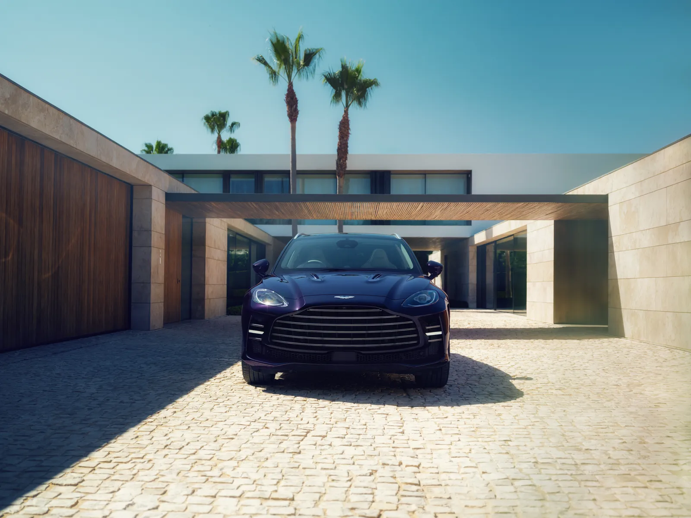
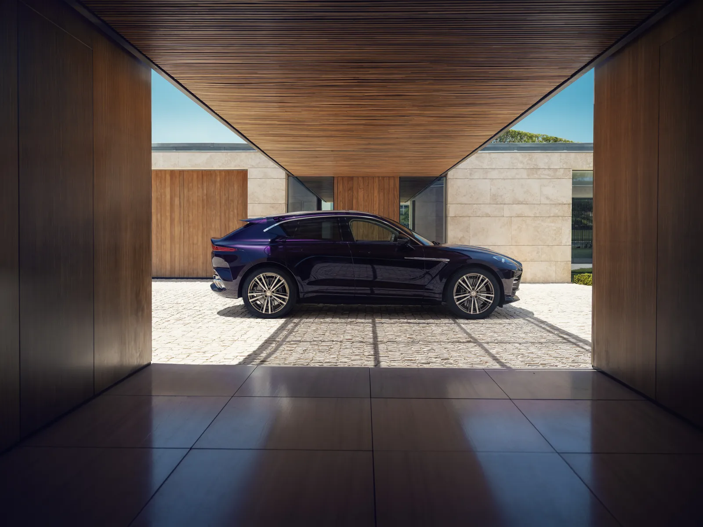
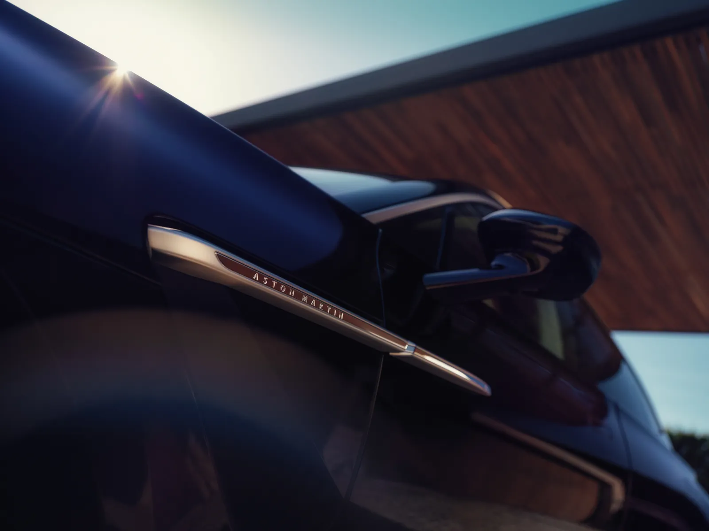
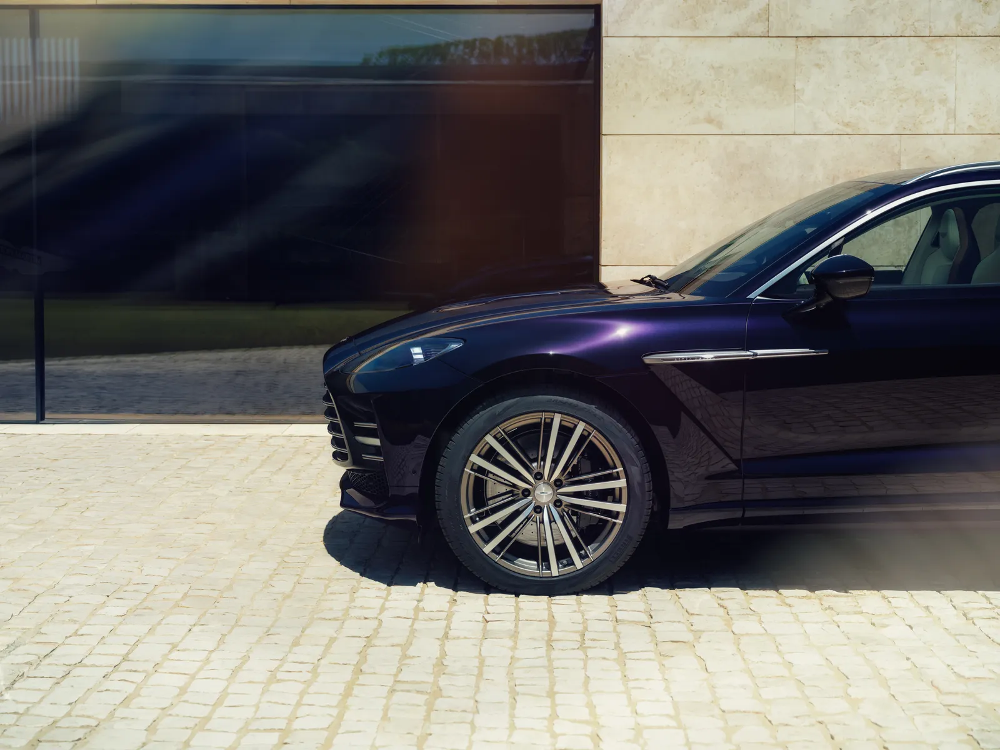
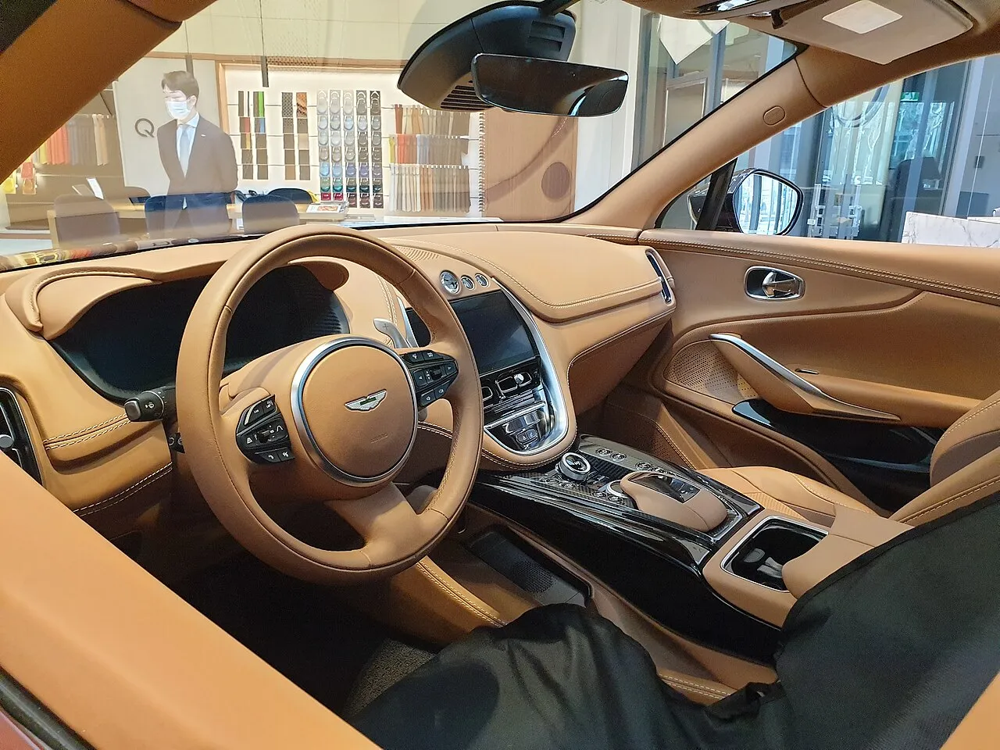
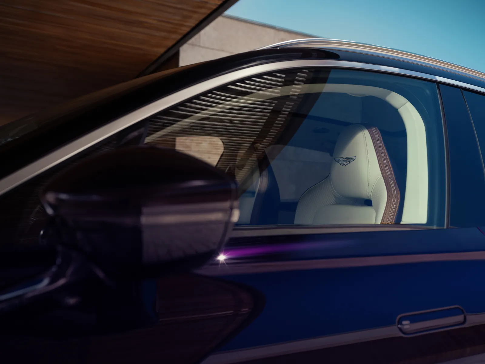
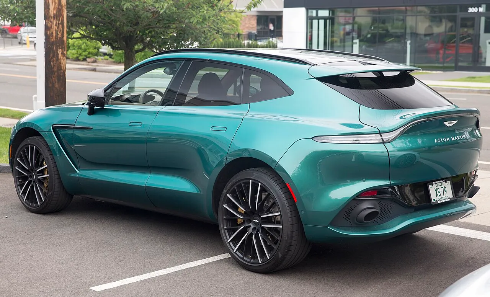
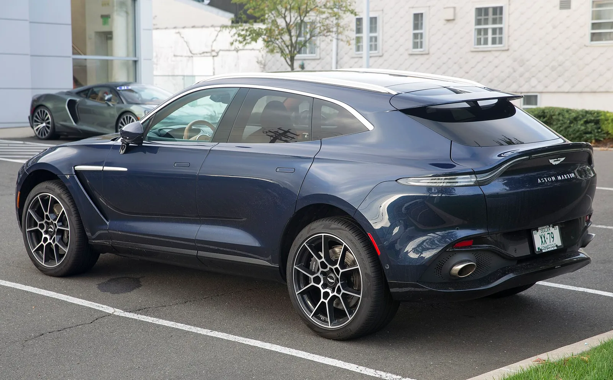
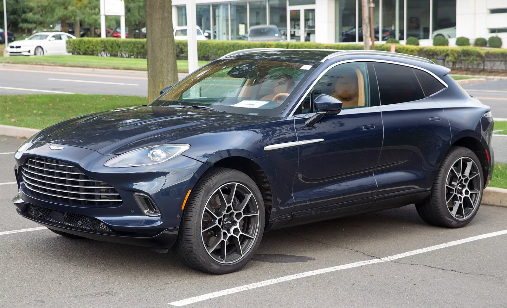

▲ 세계 최초 공개된 애스턴마틴 DBX GT(공식 프레스룸 보도사진) ⓒ Aston Martin Lagonda
"스포츠 SUV는 이미 충분히 공격적이다." 애스턴마틴이 DBX S와 같은 727PS V8을 얹고도 이름을 'GT'로 바꾼 신형 SUV를 내놨다. 2026년 10월 1일(공식 보도자료 게시일) 공개된 DBX GT는 월페이퍼 보도에 따르면 런던 메이페어 버클리 스퀘어의 새 플래그십 쇼룸 'Q 런던'에서 세계 최초로 선보였다. 애스턴마틴 공식 보도자료는 이 차를 "초고급 장인정신과 세련된 안락함, 여유로운 성능"의 SUV로 소개한다.
이 글은 DBX GT의 사양과 DBX S와의 차이, Q 런던이라는 공개 무대의 성격을 정리한다. 한국에 먼저 공개된 'S' 시리즈는 DBX S·밴티지 S·DB12 S 한국 공개 기사에서 다뤘다.
1. 정말 세계 최초 공개였나 — 날짜부터 확인
애스턴마틴 미디어 사이트의 공식 보도자료는 DBX GT를 2026년 10월 1일에 발표한 것으로 게시했다. 월페이퍼는 이 공개를 "Q 런던 개장과 함께"한 데뷔로 10월 1일자에 전했고, 로브리포트·모터1·뉴애틀러스 등도 같은 시기에 사양 기사를 냈다. 오토트리뷴은 Q 런던 개장일을 10월 5일로 적었다. 즉 DBX GT 공개일(10월 1일)은 공식 보도자료 게시일로 확인되지만, Q 런던 개장일은 오토트리뷴이 10월 5일로 적은 반면 월페이퍼 기사에는 개장일이 명시돼 있지 않고(기사 게시일만 10월 1일), 공식 자료로도 확인할 수 없다. 'Q 런던 개장과 함께 공개됐다'는 표현은 월페이퍼 단독 근거이므로, 카프리즘은 공개일만 공식 자료의 10월 1일로 확정한다.
| 항목 | 공식 보도자료 / 월페이퍼(구분 표기) | 오토트리뷴(국내 보도) |
|---|---|---|
| 공개일 | DBX GT 공개 10월 1일(공식 보도자료 게시일). 월페이퍼는 Q 런던 개장일을 명시하지 않음(기사 게시일 10월 1일) | Q 런던 개장 10월 5일로 표기(월페이퍼와 불일치, 공식 확인 불가) |
| 장소 | 공식 본문에 언급 없음. 월페이퍼: 런던 메이페어 버클리 스퀘어, Q 런던 | 버클리 스퀘어 14번지 |
| 쇼룸 규모 | 지상·지하 587㎡, 최대 4대 전시(월페이퍼) | 587㎡ 2개 층, 최대 4대 |
| 운영 | 공식 자료에서 확인 못 함 | H.R. 오웬(딜러)이 운영한다고 보도 |
| DBX GT 공개 | Q 런던 개장과 함께 세계 최초 공개(월페이퍼 단독 근거) | 동일 |
정리하면 DBX GT의 세계 최초 공개일(10월 1일)은 공식 보도자료로 확인된다. 반면 애스턴마틴 보도자료 본문에는 Q 런던·버클리 스퀘어 언급이 없어, Q 런던에서의 공개와 개장 시점·규모·운영사는 월페이퍼와 오토트리뷴 보도에 의존한 정보다.

▲ DBX GT 정면. 새 더블 베인 그릴이 얼굴의 인상을 정한다. 보도사진 속 차체색이 별도 사양인지는 확정하지 않았다 ⓒ Aston Martin Lagonda(공식 프레스룸 보도사진)
2. 제원 — 727PS·900Nm, 숫자는 DBX S와 같다
공식 보도자료의 핵심 수치는 4.0리터 트윈터보 V8의 727PS(약 535kW 환산)와 900Nm, 0-60mph 3.1초, 최고 속도 193mph다. 미국 매체가 "717마력"이라고 적은 것은 단위 차이다. PS(미터법 마력)를 영국·미국식 hp로 바꾸면 727×0.9863=약 717hp이고, 900Nm은 약 664lb-ft다(카프리즘 환산). 즉 727PS와 717hp는 같은 출력이다.
| 항목 | 공식 수치 | 환산·메모 |
|---|---|---|
| 엔진 | 4.0L V8 트윈터보 | 뉴애틀러스는 메르세데스-AMG 기반을 애스턴이 재제작한 엔진이라고 소개 |
| 최고 출력 | 727PS(약 535kW 환산) | 717hp(727×0.9863), 미국 매체 표기 |
| 최대 토크 | 900Nm | 약 664lb-ft |
| 0-60mph | 3.1초 | 공식 0-100km/h 수치는 확인하지 못함(일부 매체 Auto Express는 0-62mph 3.3초 보도, 공식 아님) |
| 최고 속도 | 193mph | 약 311km/h(193×1.609) |
| 변속기·구동 | 9단 습식 다판 자동(공식 보도자료), 사륜구동(Carscoops·Auto Express·뉴애틀러스) | Auto Express·뉴애틀러스는 "후륜 쏠림(rear-biased)" AWD로 소개. 공식 본문의 AWD 문구는 확인하지 못함 |
| 브레이크 | 카본 세라믹 앞 420mm·뒤 390mm | 공식 자료 |
| 휠·타이어 | 22인치 단조 휠 + 피렐리 스콜피온 제로 올시즌(기본) | 23인치 선택, 서머 타이어(P Zero)도 선택 가능 |
| 선회 반경 | 12.0m | 공식 자료 |
| 중량 | 공식 자료에 없음 | 뉴애틀러스·Auto Express는 "약 2.2톤", Carscoops는 4,949lb(2,245kg)로 소개(모두 공식 수치 아님) |

▲ DBX GT 측면. 기본 22인치 단조 휠을 낀다. 보도사진의 휠 크기를 직접 확정하지는 않았다 ⓒ Aston Martin Lagonda(공식 프레스룸 보도사진)
📍 "3.1초"는 0-60mph 기준이다
공식 자료의 가속 수치는 0-60mph(약 96.6km/h)다. 한국에서 흔히 쓰는 0-100km/h와는 기준이 달라 직접 비교하면 약간 유리하게 보인다. 공식 0-100km/h 기록은 이번 자료에서 확인하지 못했다. 일부 매체(Auto Express)는 0-62mph 3.3초로 보도했으나 공식 수치가 아니다. DBX S도 같은 3.1초라는 보도가 있으나 이는 2차 자료이며, 애스턴마틴 DBX S 원문과 직접 대조하지는 못했다.
중량을 가정한 출력 대비 계산(비공식)
공식 공차중량이 없으므로 Carscoops가 전한 4,949lb(약 2,245kg)를 가정값으로 놓고 계산했다. 수식은 출력(PS)÷중량(t)이다. 727PS÷2.245t=약 323.8PS/t, 토크는 900Nm÷2,245kg=약 0.40Nm/kg이다. 뉴애틀러스·Auto Express의 "약 2.2톤"을 쓰면 값이 조금 달라지므로 소수점 이하 차이는 의미가 없다. 같은 엔진을 쓰는 DBX S의 중량 비교는 이번에 공식 자료로 확인하지 못했다.
3. DBX S와 무엇이 다른가 — 엔진 아닌 '성격'을 바꿨다
한국 공개 기사에서 DBX S는 727PS·900Nm에 카본 루프와 23인치 마그네슘 휠 등으로 최대 47kg을 줄인 차로 정리했다(수치는 카프리즘 한국 공개 기사 기준이며 이번에 원출처를 재확인하지 못했다). DBX GT는 같은 엔진 출력을 유지하면서 승차감·정숙성·실내 마감 쪽으로 방향을 틀었다. 최고경영자 에이드리언 홀마크는 "과시적인 스포티함보다 절제된 우아함을 선호하고 더 높은 수준의 럭셔리를 원하는 고객을 겨냥한다"고 설명했다.
| 구분 | DBX S | DBX GT |
|---|---|---|
| 출력·토크 | 727PS·900Nm | 727PS·900Nm(동일) |
| 콘셉트 | 고성능·경량화(최대 47kg 절감, 카프리즘 한국 공개 기사 기준) | 초고급 안락함·정숙성 |
| 전면 그릴 | 대형 허니콤(뉴애틀러스 표현) | 새 더블 베인 그릴(밝은·어두운 마감 선택) |
| 외장 부품 | 카본 파이버 요소 강조(뉴애틀러스 표현) | 차체색 하단 범퍼·사이드 스커트·디퓨저가 기본 |
| 배기 | Carscoops는 DBX S가 적층(stacked) 배열이라고 설명, 공식 대조는 하지 못함 | 가로형 쿼드 배기 마감, 별도 배기 튜닝 |
| 휠(기본) | 23인치 마그네슘(한국 공개 기사 기준) | 22인치 단조(23인치 선택) |
| 실내 | 공식 대조는 하지 못함 | 시트 재설계, 파노라마 글라스 루프 기본 |
| 서스펜션 | 공식 대조는 하지 못함 | 댐퍼 밸브·캘리브레이션 변경(Auto Express는 GT 전용 에어 서스펜션 튜닝이라고 보도, 공식 본문 대조는 못 함) |
▲ 기존 DBX707(2023년식으로 표기된 사진)의 전면. 신형 DBX GT의 더블 베인 그릴과 비교하기 위한 참고 사진이며 DBX GT가 아니다 ⓒ Mr.choppers (Wikimedia Commons, CC BY-SA 3.0)
"공식 대조는 하지 못함"으로 적은 칸은 DBX S 쪽 공식 원문을 이번에 열어보지 못한 항목이다. 매체 비교가 아니라 사양서 비교가 필요하며, 카프리즘은 이를 추정으로 채우지 않았다.

▲ 앞 펜더의 금속 사이드 스트레이크. 보도자료는 광택·새틴 투톤 마감의 2피스 구조라고 설명한다 ⓒ Aston Martin Lagonda(공식 프레스룸 보도사진)
4. 승차감 개조 — 댐퍼 밸브·소음 지표 13% 개선
기술 책임자 이언 호반은 "일상 주행에서 의미 있는 안락함 향상과 클래스 최고 수준의 성능 여력을 동시에 얻는 것이 과제였다"고 말했다. 공식 자료에 따르면 서스펜션은 댐퍼 밸브 시스템과 캘리브레이션을 새로 잡았고 스프링 레이트는 주행 모드별로 달라진다. 차체와 후방 서브프레임을 잇는 세로 방향 댐퍼 두 개, 변속기 마운트 부싱도 새로 적용됐다.
| 부위 | 변경 내용 | 비고 |
|---|---|---|
| 댐퍼 | 밸브 시스템·캘리브레이션 변경 | 스프링 레이트는 드라이브 모드별 조정 |
| 서브프레임 | 차체-후방 서브프레임 연결 세로 댐퍼 2개 | 진동 전달 저감 목적 |
| 변속기 마운트 | 새 부싱 | 공식 자료 표현 |
| 유리 | 후측면 어쿠스틱 합판 유리 | 소음 저감 |
| 방음 | 도어·휠 아치 부분 방음, 심층 카펫, 차체 실링 강화 | - |
| 소음 지표 | Articulation Index 13% 개선 | 실내 대화 명료도 지표, 측정 조건은 확인 못 함 |
Articulation Index는 실내에서 대화가 얼마나 또렷하게 들리는지를 나타내는 지표라 '데시벨'과는 다르다. 13% 개선이 몇 dB에 해당하는지, 어떤 속도에서 측정했는지는 공개되지 않았다. 따라서 "13% 조용해졌다"고 읽으면 틀린다.

▲ DBX GT 측면 클로즈업. 사이드 스트레이크는 광택과 새틴 마감을 섞은 2피스 구조다 ⓒ Aston Martin Lagonda(공식 프레스룸 보도사진)
5. 실내 — 시트 한 개에 4.5시간, 3297개 구멍
보도자료는 앞·뒤 시트를 새로 설계해 10mm 메모리폼 층을 넣었고 뒷좌석은 독립형 배치지만 5인승 구성은 유지한다고 밝혔다. 세미 아닐린 가죽과 깊은 파일 바닥 매트가 쓰이며 파노라마 글라스 루프는 기본이다. 앞좌석 하나에 들어가는 실은 691m, 퍼포레이션은 3297개, 제작에는 4.5시간 이상 걸린다고 한다. 오디오는 바워스&윌킨스다. 월페이퍼는 트림이 모노톤·듀오톤·트리톤으로 나뉜다고 소개했다.
| 항목 | 내용 |
|---|---|
| 시트 | 10mm 메모리폼 층, 앞·뒤 시트 재설계 |
| 뒷좌석 | 독립형 시트 배치, 5인승 구성 유지 |
| 소재 | 세미 아닐린 가죽, 딥 파일 플로어 매트 |
| 루프 | 파노라마 글라스 루프 기본 |
| 앞좌석 제작 | 실 691m·구멍 3297개·4.5시간 이상 |
| 오디오 | 바워스&윌킨스 |
| 트림 색상 조합 | 모노톤·듀오톤·트리톤(월페이퍼) |

▲ 참고용 기존 DBX 실내(쇼룸 촬영, 연식·트림은 확정하지 않음). DBX GT의 재설계 시트·트림과는 다를 수 있다 ⓒ Damian B Oh (Wikimedia Commons, CC BY-SA 4.0)

▲ 측면 유리 너머로 보이는 밝은 색 시트(보도사진). 시트 형상과 마감 세부는 사진으로 확정하지 않았다 ⓒ Aston Martin Lagonda(공식 프레스룸 보도사진)
6. Q 런던 — 맞춤 주문을 위한 쇼룸
월페이퍼에 따르면 Q 런던은 버클리 스퀘어 동쪽 면에 있으며 지상·지하 587㎡를 쓰고 최대 4대를 전시한다. 사양 상담실, 비공식·공식 좌석 공간, 개인 식사를 겸한 이사회실이 있고 뉴욕 파크 애비뉴의 Q 뉴욕이 만든 틀을 따랐다. 오토트리뷴은 500종 이상의 소재 샘플과 8m 디지털 컨피규레이터 화면도 소개했지만 공식 자료에서는 확인하지 못했다. 맞춤 서비스 'Q by Aston Martin'의 거점이라는 점이 핵심이다.
| 항목 | 내용 | 출처 |
|---|---|---|
| 위치 | 런던 메이페어 버클리 스퀘어 | 월페이퍼·오토트리뷴 |
| 면적 | 587㎡(지상·지하 2개 층) | 월페이퍼·오토트리뷴 |
| 전시 대수 | 최대 4대 | 양쪽 일치 |
| 부대시설 | 사양 상담실, 라운지, 커피 바 | 오토트리뷴(커피 바는 월페이퍼에 없음) |
| 소재 샘플 | 500종 이상 | 오토트리뷴, 공식 확인 못 함 |
| 디지털 화면 | 8m 컨피규레이터 | 오토트리뷴, 공식 확인 못 함 |
| 운영 주체 | H.R. 오웬 | 오토트리뷴, 공식 확인 못 함 |
7. 가격·출시 — 아직 비어 있는 칸
애스턴마틴 공식 자료는 가격을 밝히지 않았다. Auto Express는 약 21만 파운드(약 £210,000)를 예상했다. 뉴애틀러스는 미국 가격을 약 26만2000달러로 예상했다(카프리즘이 기사 원문 확인). Auto Express는 DBX S와 비슷한 수준이라고 적었다. 모두 매체 추정이며 공식 발표가 아니다. Carscoops는 시장별 가격이 아직 발표되지 않았다고 전한다. 인도는 2026년 4분기부터라고 공식 자료에 적혀 있다. 판매 시장 목록과 한국 도입 여부는 공개되지 않았다. 앞서 국내에 S 라인업이 공개된 만큼 DBX GT의 후속 도입을 기대할 수는 있으나, 이는 근거 없는 추측일 뿐 공식 언급은 확인하지 못했다.
| 항목 | 상태 |
|---|---|
| 세계 최초 공개 | 공식 보도자료로 확인(2026.10.1) |
| 출력·토크 | 727PS·900Nm 확인 |
| 0-100km/h | 공식 확인 못 함(0-60mph 3.1초만 확인, Auto Express의 0-62mph 3.3초는 비공식) |
| 공식 가격 | 발표 없음(Auto Express 약 £210,000 추정, 뉴애틀러스 약 26만2000달러는 기사 원문 확인, 둘 다 추정) |
| 인도 시작 | 2026년 4분기(공식) |
| 한국 출시 | 확인 못 함 |
| 공차중량 | 공식 수치 없음(Carscoops 2,245kg, 뉴애틀러스·Auto Express 약 2.2톤은 비공식) |
✅ 카프리즘 체크포인트
DBX GT는 DBX S에서 엔진 출력을 줄인 차가 아니라 같은 출력에 안락함을 더한 변형이다. 다만 두 차의 승차감 차이를 수치로 비교한 자료는 없고, 소음 13% 개선도 측정법이 공개되지 않았다. "더 조용하다"는 방향은 확인되지만 "얼마나"는 시승 전에는 알 수 없다.

▲ 참고용으로 쓴 기존 DBX(2023년형으로 표기된 사진)의 후면. DBX GT 사진이 아니며 신형은 가로형 쿼드 배기 마감을 갖는다 ⓒ Mr.choppers (Wikimedia Commons, CC BY-SA 3.0)

▲ 참고용 기존 DBX(2021년식으로 표기된 사진)의 후측면. DBX GT와 외관 세부가 다를 수 있다 ⓒ Mr.choppers (Wikimedia Commons, CC BY-SA 3.0)
같은 브랜드의 다른 고성능 모델은 DB12 S 페블비치 공개 기사와 발렌 V12 기사에서 확인할 수 있다. 공식 보도자료는 아래 버튼에서 볼 수 있다. 애스턴마틴 보도자료 바로가기
8. 가격 환산 — 매체 추정치를 원화로 바꿔 보면
공식 가격이 없으므로 한국 도입가를 예측하는 것은 불가능하다. 다만 매체가 제시한 £210,000(Auto Express)과 약 $262,000(뉴애틀러스)이 원화로 어느 정도 규모인지 가늠하는 용도로 단순 환산표를 만들었다. 환율은 카프리즘이 임의로 둔 가정값이며 실제 환율이 아니다. 수식은 외화 금액×환율이고, 한국 도입 시 붙는 관세·개별소비세·부가세·딜러 마진은 포함하지 않았다.
| 기준 | 가정 환율 | 환산액 |
|---|---|---|
| £210,000(Auto Express) | 1파운드=1,800원 | 약 3.78억원 |
| 1,900원 | 약 3.99억원 | |
| 2,000원 | 약 4.20억원 | |
| $262,000(뉴애틀러스) | 1달러=1,350원 | 약 3.54억원 |
| 1,400원 | 약 3.67억원 | |
| 1,450원 | 약 3.80억원 |
환율이 100원 움직이면 파운드 기준은 약 2,100만원, 달러 기준은 약 2,620만원씩 달라진다(£210,000×100원, $262,000×100원). 영국 가격이 현지 부가세 포함 표기인지, 미국 가격이 세전 표기인지도 이번 자료로 확인하지 못했다. 따라서 이 표는 "3~4억원대 규모의 차"라는 감각을 잡는 용도로만 쓰는 것이 맞다.

▲ 참고용 기존 DBX(2021년식으로 표기된 사진)의 전면. DBX GT가 아니다 ⓒ Mr.choppers (Wikimedia Commons, CC BY-SA 3.0)
9. 상담·시승 전에 따져볼 것 — 한국 독자용 체크리스트
한국 출시는 확인되지 않았지만, 향후 도입될 경우를 대비해 공식 자료에서 선택지가 갈리는 항목만 정리했다. 모두 현재 공개된 정보에서 끌어낸 질문이며 한국 사양은 아직 없다.
| 항목 | 공개된 내용 | 확인할 질문 |
|---|---|---|
| 휠·타이어 | 22인치 단조+올시즌 기본, 23인치·서머 타이어 선택 | 한국 도입 사양에서 선택 가능한지, 승차감 목적이면 22인치가 기본이라는 점 |
| 뒷좌석 | 독립형 시트 배치, 5인승 유지(Carscoops는 바깥 두 자리가 개별 시트이고 가운데 자리가 있다고 설명) | 가운데 자리의 실제 착좌감, 성인 3명 탑승 가능 여부 |
| 적재공간 | 공식 자료·인용 매체 모두 수치 없음 | 다른 SUV와 비교하려면 실측이 필요(SUV 트렁크 적재 용량 순위 기사 참고) |
| 배기·소음 | 가로형 쿼드 배기, 배기 밸브 재튜닝(Auto Express) | 저속 주행 시 실내 소음, 아파트 단지 진입 시 배기음 |
| 서스펜션 | 댐퍼 밸브·스프링 레이트 모드별 조정 | 한국의 과속방지턱·요철 구간에서의 승차감 |
| 0-100km/h | 공식은 0-60mph 3.1초만 | 한국 기준 수치가 공개되는지 |
자주 묻는 질문
Q. DBX GT가 DBX S보다 느린가?
공식 출력·토크는 727PS·900Nm으로 같고 0-60mph도 3.1초로 발표됐다. 다만 DBX S 쪽 수치와 중량을 이번에 공식 자료로 직접 대조하지 못했고, GT가 더 무거울 수 있다는 점은 추정이다.
Q. 지금 한국에서 살 수 있나?
한국 출시·가격은 확인하지 못했다. 같은 브랜드의 다른 소식은 밴티지 RS 뉘르부르크링 기사와 애스턴마틴 수동변속기 기사에서 볼 수 있다.
Q. 인도는 언제부터인가?
공식 보도자료는 2026년 4분기에 첫 고객 인도가 시작된다고 밝혔다.
10. 요약
DBX GT는 2026년 10월 1일(공식 보도자료 게시일) 세계 최초로 공개됐고(월페이퍼는 Q 런던 개장과 함께라고 보도), 4.0L V8 트윈터보 727PS(717hp)·900Nm에 0-60mph 3.1초를 낸다. 출력은 DBX S와 같지만 더블 베인 그릴, 차체색 하단부, 쿼드 배기, 22인치 단조 휠 등으로 성격을 안락함 쪽에 맞췄다.
승차감과 정숙성은 댐퍼 밸브·세로 댐퍼·방음 보강으로 개선했다고 하나 공개 수치는 제한적이다. Articulation Index 13% 개선의 측정 조건과 공식 공차중량은 공개되지 않았다(매체는 약 2.2톤으로 소개).
가격은 공식 발표가 없고(Auto Express 약 £210,000, 뉴애틀러스 약 $262,000은 추정) 인도는 2026년 4분기부터다. 한국 출시와 공식 0-100km/h 기록은 확인하지 못했다.